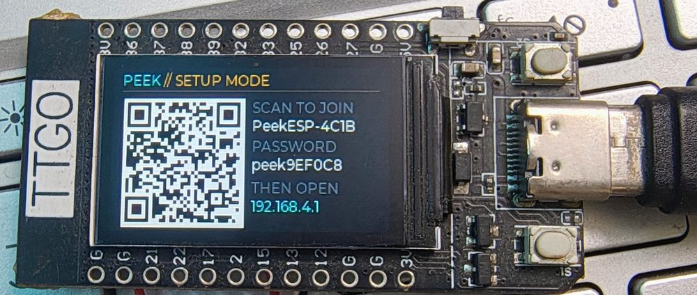
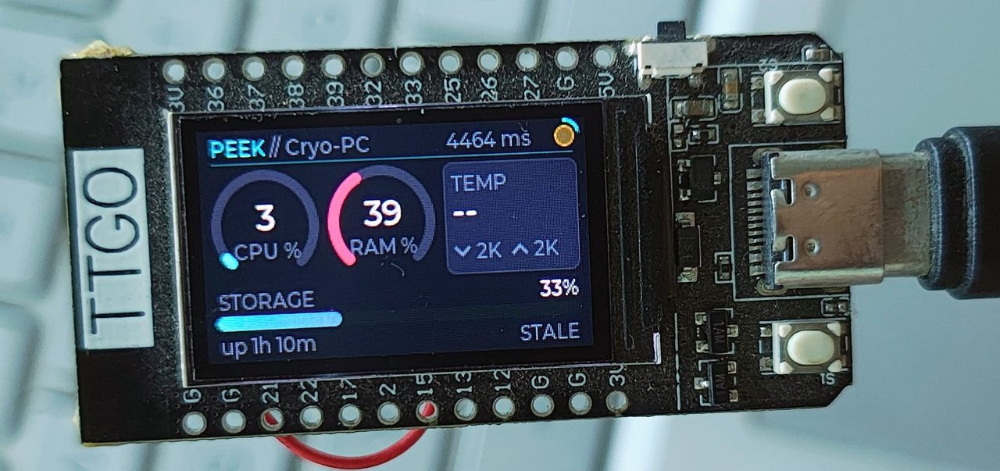
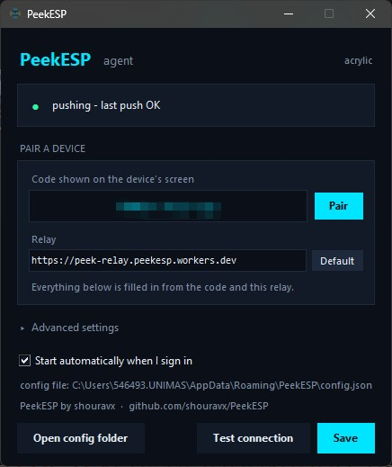

That is a long drive to answer “is it still running?” — and for months the answer was to SSH in when I remembered, find everything fine, and close the terminal.
PeekESP is a 1.14″ screen on my desk that just tells me. CPU, memory, storage, temperature and throughput for that machine, updating every five seconds, 250 km away.
Arduino + LVGL · Cloudflare Worker · MIT licensed
240 × 135. Drawn here at the panel’s real resolution.
The problem
Home broadband in Kushtia sits behind carrier-grade NAT. There is no port to forward, no inbound connection to accept, and no amount of router configuration changes that — the address is not mine to open.
A VPN was the next thought and also wrong. An ESP32 cannot join a Tailscale network at all: Tailscale is WireGuard plus a control plane — node registration, rotating keys, DERP relays — and none of that has an embedded client. Plain WireGuard was possible, and this project used to do it, but it needed the monitored host to accept an inbound connection. Which is where we came in.
So both ends dial out instead.
Neither side listens. Nothing needs an inbound port, which is what makes this work behind CGNAT or on a network you do not administer.
Setup
The device shows a code on first boot. You type it into the desktop app. That is the whole configuration — no account, no token to copy, no port to open.
Both sides derive the stream and both auth tokens from that code locally. The relay never sees it, which is why pairing needs no secrets configured on the Worker at all.
# the same three lines in four languages
stream = SHA-256("peek-stream:" + CODE) first 16 hex
push = SHA-256("peek-push:" + CODE) first 48 hex
read = SHA-256("peek-read:" + CODE) first 48 hex
C++ on the device, Python in the app and the Linux agent,
JavaScript in the Worker — all pinned against vectors generated by
openssl. A drift between any two would have a machine pushing to
a stream the device never reads, with every request still looking valid from
both ends.
The alphabet drops I, O,
0 and 1: those are the pairs people mistype reading
a code off a screen this size. Ten characters from the remaining 32 is
250.

WIFI: join string, so a phone camera joins it directly rather than
anyone reading a generated password off a 1.14″ panel.On the device
A pairing code identifies a person, not a machine. Run the agent on a desktop, a laptop and a Pi with the same code and all three appear here. Six per code.
CPU and memory arcs, temperature and throughput, storage across every fixed disk with free space beside it. Swiping costs nothing: one poll already carried them all, so the display makes the same number of requests whether it shows one machine or six.
Local time from the NTP sync the TLS handshake needed anyway, with a bar that fills across the minute so the page never looks frozen. The offset is stored in minutes, because Kathmandu is +5:45 and an hours-only field silently cannot express that.
The board’s own cell, and the monitored machine’s battery underneath it. While a charger holds the node up there is no percentage shown at all — that voltage is the charger’s, not the cell’s state of charge, and reporting it as one reads “100 %” against an almost empty battery.

After five polls bring nothing newer, its readings grey out and its
name turns amber. The age is counted on the device’s own clock, not the
relay’s timestamp — that field only refreshes when a poll
succeeds, so when the network drops it freezes and the machine goes
on reporting up 3d 4h indefinitely. Live-looking numbers behind a
dead link is the one failure a monitor must not have.
Install
winget install peekesp
curl -fsSL https://raw.githubusercontent.com/\ shouravx/PeekESP/main/dietpi/install.sh | sudo sh
Asks for the pairing code, installs a
hardened systemd service, and waits to confirm the machine is actually
pushing before it says it worked. Then peekesp status,
peekesp logs -f, sudo peekesp uninstall.
python tools/flash.py
Writes the prebuilt image. No Arduino IDE, no ESP32 core, no libraries — the only download is esptool.

Before you build one
SmartScreen will warn the first time — More info → Run anyway. A self-signed certificate would not help: it is trusted by exactly one machine, and the Microsoft tooling that offers to make one says “for testing purposes only” in its own documentation. A real one needs a hardware token and a yearly fee.
Each agent costs 17,280 requests a day at a five-second interval, and so does each display, against Cloudflare’s 100,000. One display and two machines fits comfortably; four is close to the edge. Raising the interval to 15 s divides everything by three.
The guarantee is precisely “once a role is claimed, only that token works” — not “only the right token was ever possible”. Squatting an unclaimed stream needs the 16-hex stream id, which needs the code, which only ever appears on the device’s screen.
An ESP32 has no 5 GHz radio, so a network missing from the scan is usually 5 GHz-only rather than a fault. And the partition table has a single app slot, so new firmware means a USB cable — fine for a display on your desk, which is where this one lives.